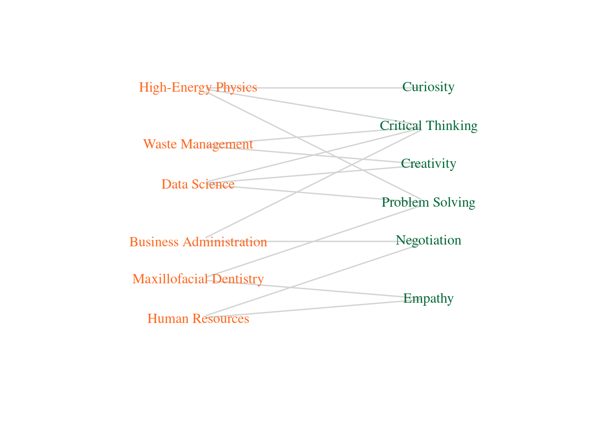

4 Midiendo la importancia de las “habilidades blandas” en la oferta de postgrado
En un trabajo recientemente publicado, (Cortés-Berrueco, Gershenson, and Stephens 2016)
library(knitr)
library(broom)
library(kableExtra)
setwd("Data")
data <- readr::read_csv("Data_Figure2.csv")
html_table <- kable(data, format = "html")%>%
kable_styling()
# Print the HTML table
html_table| Soft Skill | Program |
|---|---|
| Critical Thinking | High-Energy Physics |
| Critical Thinking | Data Science |
| Critical Thinking | Waste Management |
| Critical Thinking | Business Administration |
| Problem Solving | High-Energy Physics |
| Problem Solving | Data Science |
| Problem Solving | Maxillofacial Dentistry |
| Creativity | Data Science |
| Creativity | Waste Management |
| Curiosity | High-Energy Physics |
| Negotiation | Business Administration |
| Negotiation | Human Resources |
| Empathy | Maxillofacial Dentistry |
| Empathy | Human Resources |
## $res
## [1] TRUE
##
## $type
## [1] FALSE FALSE FALSE FALSE FALSE FALSE TRUE TRUE TRUE TRUE TRUE TRUEV(bn)$type <- bipartite_mapping(bn)$type
V(bn)$color <- ifelse(V(bn)$type, "#FF671F", "#046A38")
V(bn)$shape == "circle" ## logical(0)V(bn)$labelcolor <- ifelse(V(bn)$type, "#FF671F", "#046A38")
E(bn)$color <- "#06038D"
E(bn)$width <- 1.5
layout <- layout_as_bipartite(bn)
rotated_layout <- cbind(layout[, 2], -layout[, 1]) # Swap x and y coordinates and negate y
plot(bn, vertex.label = V(bn)$name, layout = rotated_layout, main = "",
vertex.label.color = V(bn)$labelcolor,
vertex.color = "black",
edge.lty = E(bn)$linetype, vertex.shape = "none")